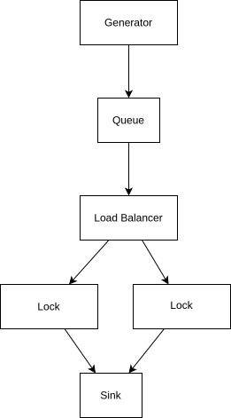

You will use (classic) DEVS to model a queueing and load balancing system for a set of waterway locks. A conceptual view of the system is shown here:
Ships move in the direction of the arrows. A generator generates ships at pseudo-random time intervals, which are added to a queue. Whenever the queue has a ship available, and one of the locks has enough remaining capacity for that ship, the load balancer pulls a ship from the queue and sends it to that lock. A lock may fit more than one ship, so as long as it is not filled up to full capacity, it may wait for more ships to arrive before the lock doors close and the ships can pass through to the other side of the lock. At the end of the system, we have a Sink, where all ships are collected, so we can extract statistics to analyse performance.
Ships can have different sizes. For simplicity, the size of a ship is a small integer (e.g., 1 or 2). Locks can have different capacities: for instance, a lock of capacity 3 will fit either:
We now give an overview of the different DEVS components, and their behavior, and their parameters. Although many of the parameters are fixed, your solution must work with different parameters as well. In other words, don't hardcode the parameter values in your DEVS blocks!
Further, two different load balancer strategies will be implemented. Each strategy will be implemented as a separate Atomic DEVS block:
TIP: This load balancer will need to remember (in its DEVS state) the lock into which a ship was moved most recently, so for the next ship, it will start with the lock after it.
Initially, the RoundRobinLoadBalancer must start with the first lock in the lock_capacities-list.
Example: if ships of sizes 1 and 2 are available, and the locks have remaining capacities 3 and 2, then the possible "moves" are:
NOTE: This load balancer also has too take into account the priority-parameter. For instance, if bigger ships are prioritized, and the following moves can be made:
Finally, if the same ship can be moved to different locks with equal priority (filling both locks up equally), then the earliest lock in the lock_capacities-list is chosen.
For simplicity, there is no time delay between sending the ships to the sink, and the lock becoming available again (at original capacity).
The specification of the semantics of the Atomic DEVS blocks is entirely deterministic. If you implement everything correctly, the system as-a-whole will behave 100% identical to the teacher's solution.
The system as a whole is modeled as a Coupled DEVS block. Its parameters are mostly passed as-is to the underlying Atomic DEVS blocks. They are:
First of all, you are given an implementation of the following AtomicDEVS blocks, which you must not edit:
You will:
An indication of the complexity: my own solution of the AtomicDEVS blocks is about 300 lines of code (including comments).
Once you have implemented the system, we will do performance analysis, comparing combinations of the following parameter values:
More specifically, we would like to know under which (combinations of) parameter values the (avg/min/max) duration that ships spend in the system is minimized. Also, we'd like to know if one choice (e.g., prioritize bigger) always better than another choice (e.g., prioritize smaller), or does it depend on the choices made for the other parameters?
gnuplot plot.gnuplotwhich will result in a number of SVG files containing plots of the CSV files.
You are only allowed to make temporary changes (for debugging) to this file.
You must stick to the rules of DEVS:
Any violation of these rules results in an incorrect solution. Points will be subtracted.
Please follow these coding conventions:
Common mistakes include: